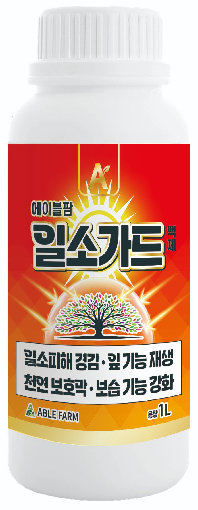

미량요소복합 · 일소(햇빛데임) 방지 액제
일소가드
일소피해 경감 · 잎 기능 재생
미립자 탄산칼슘·트레할로스·기능성 아미노산에 붕소·몰리브덴을 더한 미량요소복합 액제로, 폭염·강광으로 인한 일소·엽소 피해 예방이 핵심입니다. 피해가 나기 전 미리 뿌리는 예방제입니다.
사용 방법
- 희석 배수
- 500배 (물 20ℓ당 40㎖)
- 사용 시기
- 6월 중하순 장마 전 1회 → 7월 이후 2~4회
- 사용 횟수·규격
- 총 1~4회 (7~10일 간격) · 엽면살포
- 적용 작물
- 감귤·사과·배·포도·복숭아·단감·자두·매실·밤 등 과수, 고추·오이·토마토·수박·참외·딸기·멜론 등 과채, 배추·무·상추·양파·마늘·당근·감자·고구마 등 채소
- 규격
- 1L
주요 효과
일소·엽소 피해 예방보호막 형성·세포벽 강화로 강한 햇빛·열에 의한 과실·잎 데임을 미리 막음.
약흔·착색 불량 최소화미립자 탄산칼슘으로 흰 약흔을 줄여 착색 불량품을 최소화.
수분 유지·세포 재생선인장 유래 트레할로스가 보습 기능과 스트레스 후 회복력을 높임.
광합성 촉진·회복 지원기능성 아미노산이 광합성을 돕고 피해 뒤 회복을 지원.
수세 회복·수정율 향상붕소·몰리브덴이 뿌리·잎 발육과 건실한 화분 형성을 도움.
주요 성분
미립자 탄산칼슘표면에 보호막을 형성하고 세포벽을 강화. 미립자라 흰 약흔을 줄여 착색 불량을 최소화.
트레할로스(선인장 유래)세포 수분을 붙잡아 보습 기능을 높이고 세포 재생력을 키우는 보호 당(糖).
기능성 아미노산엽록소 합성·질소 대사를 도와 광합성을 촉진하고 회복을 도움.
붕소·몰리브덴화분 형성·수정율과 질소 대사를 도와 열과·낙과 경감·생육 지원.
관련 재배 안내 · 에팜티비 쇼츠

사과 일소(햇볕 데임) — 데기 전에 막는 법원인과 관리 순서를 국가기관 자료로 정리하고 30초 쇼츠로 담았습니다 →
자주 묻는 질문
약흔(흰 자국)이나 착색 불량 걱정은 없나요?
탄산칼슘을 아주 곱게 만든 미립자 형태로 배합해, 잘 녹지 않아 흰 약흔을 남기는 기존 탄산칼슘의 단점을 보완했습니다. 표면 약흔을 줄여 착색기 착색 불량품을 최소화하도록 설계되었습니다.
이미 일소 피해가 생긴 과실에도 효과가 있나요?
한번 데인 조직은 되돌릴 수 없습니다. 일소가드는 치료제가 아니라 피해가 나기 전 표면에 보호막을 만들어 두는 예방 제품이므로, 장마 전과 폭염기 이전에 미리 사용하는 것이 중요합니다.
희석 배수와 사용 시기는?
500배로 희석(물 20ℓ당 40㎖)해, 6월 중하순 장마 전 1회를 시작으로 7월 이후 2~4회, 7~10일 간격 총 1~4회 엽면살포합니다.
사과 일소는 언제, 어떻게 막나요?
사과 일소는 33℃ 넘는 고온에 강한 직사광선이 이어질 때 햇빛 받는 쪽 과실 표면이 데어 생깁니다(농촌진흥청). 한번 데인 조직은 되돌릴 수 없으므로 6월 중하순 장마 전 1회, 7월 이후 폭염 예보 전에 미리 뿌려 표면에 미립자 탄산칼슘 보호막을 만들어 두세요. 미세살수·차광망이 있으면 함께 쓰면 더 좋습니다. 자세한 관리 순서는 사과 일소 관리 안내(https://www.ablefarm.co.kr/guide/apple-sunburn.html)를 참고하세요.